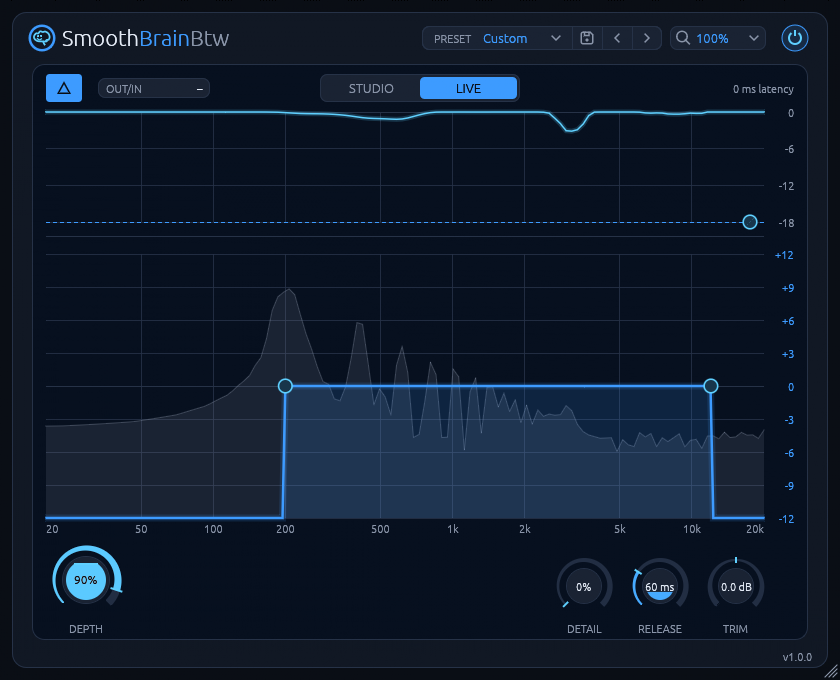

SmoothBrainBtw reads the line the partials of a note trace across the spectrum, and where a region bulges out of that line, a bite around 3 kHz on a voice or a ringing string, it turns that region down for as long as it bulges. The notes themselves are left alone, and so is the rest of the sound: on a sung phrase with a resonance put on it, it takes 1.0 dB of the resonance back for 0.001 dB of the voice. The envelope's width follows the voice's pitch, so a high voice keeps its notes too. DEPTH sets how much, DETAIL how narrow, a curve with a low and a high cut and up to six points says where it works and how keenly, and DELTA plays only what it takes out. It is not an EQ you set once, and it doesn't fix a boomy bass note or a room mode in a mix: down there a frequency bin is wider than the resonance.
Read the manual for every control and how to use it.
Screenshots


What it's for
Features
- What sticks out, not the notes: on a sung phrase with a +8 dB resonance at 3 kHz, DEPTH 50 % takes back 1.04 dB of it for 0.001 dB of the voice and DEPTH 75 % 2.02 dB for 0.14 dB.
- High voices keep their notes: the same phrase an octave up loses 0.005 dB of the voice at DEPTH 50 %, where a fixed width cost 2.31 dB.
- A curve to say where: a low and a high cut set the band it works in, and up to six points, each a bell with its own width, make it keener or calmer where they stand. A point 6 dB up over the test resonance takes 4.9 dB of it back where the defaults take 1.1.
- Broad or narrow: DETAIL from a broad hand on a whole bulge to single partials.
- Hear one point: hold a point with the middle button, or Alt and the left, and only its part of the spectrum plays; drag it while holding to sweep.
- DELTA: plays only what is taken out. DELTA plus the output is the input within 1e-6.
- OUT/IN: reads how much louder the output is than the input over the last 3 seconds, and a click sets TRIM to take the difference off, for a fair comparison.
- STUDIO and LIVE: STUDIO catches a new resonance as it starts, behind 32 ms of latency at 48 kHz; LIVE has none, for monitoring while recording. Both are reported to the host.
- Nothing cut is the input to the bit: with MAX CUT at 0 the output is the input, delayed by the latency.
- Light: 0.55 % of a CPU core at the defaults, stereo at 48 kHz, and 0.035 % on digital silence.
- Presets: Init and five built in (Vocal, Guitar, Overheads, Synth Lead, Mix Bus), and your own.
- A resizable window in which the display grows, and zoom from 100 to 200 %.
- No network access and no telemetry.
Install
Download the latest version from the Releases page, or with these commands:
curl -LO https://github.com/jelly-comet/SmoothBrainBtw-release/releases/download/v1.0.0/SmoothBrainBtw-1.0.0-linux-x86_64.tar.gz
curl -LO https://github.com/jelly-comet/SmoothBrainBtw-release/releases/download/v1.0.0/SmoothBrainBtw-1.0.0-linux-x86_64.tar.gz.sha256
sha256sum -c SmoothBrainBtw-1.0.0-linux-x86_64.tar.gz.sha256 && tar xzf SmoothBrainBtw-1.0.0-linux-x86_64.tar.gz
cd SmoothBrainBtw-1.0.0-linux-x86_64
Install for your user:
mkdir -p ~/.clap
rm -f ~/.clap/SmoothBrainBtw.clap && cp SmoothBrainBtw.clap ~/.clap/
Or for all users:
sudo mkdir -p /usr/lib/clap
sudo rm -f /usr/lib/clap/SmoothBrainBtw.clap && sudo cp SmoothBrainBtw.clap /usr/lib/clap/
Removing the old copy first avoids overwriting a file a running host has loaded. Then rescan plugins in your DAW.
To uninstall:
rm -f ~/.clap/SmoothBrainBtw.clap
Your presets stay in ~/.local/share/SmoothBrainBtw/presets/; delete that folder too if you want them gone.
FAQ
Is it free?
Yes. The download is free and MIT-licensed.
Is there a VST3 or LV2 version?
No. Releases contain the CLAP plugin only.
Does it run on ARM, like a Raspberry Pi or Apple Silicon?
No. It needs Linux on x86-64, on a CPU with AVX2.
Which hosts does it work in?
Any CLAP host. It was tried in REAPER.
Does it work on Wayland?
Through XWayland. The editor also needs a Vulkan driver.
Does it fix a boomy bass or a room mode?
No. Down there a frequency bin is wider than a bass resonance, so it cuts the region around one about as much as the resonance. A dynamic EQ bell does that better.
What's new in v1.0.0
27 Nov 2026 · Release on GitHub
SmoothBrainBtw 1.0: a resonance suppressor that takes down what sticks out of a voice, a guitar, a cymbal or a synth, only where and while it sticks out.
- What sticks out, not the notes: on a sung phrase with a +8 dB resonance at 3 kHz, DEPTH 50 % takes back 1.04 dB of it for 0.001 dB of the voice, DEPTH 75 % 2.02 dB for 0.14 dB. The envelope's width follows the voice's pitch, so a high voice keeps its notes (an octave up, 0.005 dB of the voice lost).
- DEPTH and DETAIL: how much, and how narrow, from a broad hand on a whole bulge to single partials.
- A curve to say where: a low and a high cut as walls, and up to six points, each a bell, that make it keener or calmer where they stand; the cut hangs in a strip above, down to MAX CUT's dashed line.
- Hear what it does: DELTA plays only what is taken out; hold a point with the middle button (or Alt) to hear only its region and drag to sweep; OUT/IN reads the level it took, and a click makes it up with TRIM.
- STUDIO and LIVE: STUDIO catches a new resonance as it starts, behind 1536 samples (32 ms at 48 kHz); LIVE has no latency, for monitoring while recording.
- Presets: Init and five built in (Vocal, Guitar, Overheads, Synth Lead, Mix Bus), and your own.
- A resizable window and zoom from 100 to 200 %. 0.55 % of a CPU core at the defaults, stereo at 48 kHz, 0.035 % on digital silence. Needs a CPU with AVX2.
License
MIT, see LICENSE. The licenses of the third-party code in the binaries are in
THIRD-PARTY-LICENSES.txt in each release archive.
VST is a registered trademark of Steinberg Media Technologies GmbH. CLAP is an open standard by the free-audio project. SmoothBrainBtw is an independent project and contains no other product's code.